navbar:
left:
- text: ""
href: index.qmd
icon: fa-home
- text: 1. Setup
href: setup.qmd
- text: 2. New Chapter
href: new_chapter.qmd ## new!Start writing content
Now you have a course repository on GitHub and you’re ready to start writing content!
The OTTR content development process revolves around the use of pull requests! Pull requests are a way to set up proposed changes (instead of direct changes) before you publish them. They enable OTTR to test your proposed changes for potential issues such as broken URLs or spelling errors. Importantly, pull requests facilitate discussions with others regarding proposed changes.
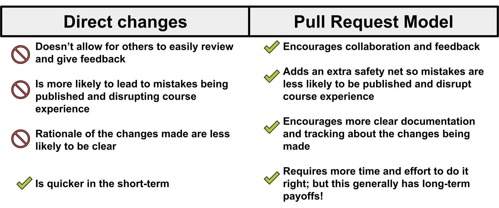
Warning
The live content is automatically created and stored in the docs folder. As our writing process guide will inform you, you should NOT make direct changes to the docs folder. The automation processes will handle the preparation of these files, and you should refrain from making direct changes to them. To learn how to edit your files and write your course, please review the corresponding section in the writing process guide.
About OTTR and Pull Requests
OTTR will not completely break if you don’t use pull requests, but you will be missing out on a lot of the main perks of OTTR. OTTR’s checks primarily focus on pull requests so you can avoid accidentally making your mistakes in your live courses.
When you submit a pull request on OTTR it triggers a sequence of automatic checks performed by GitHub Actions. These checks are designed to assist you as you add content to your course.
These checks will:
- Check that the all the URLs actually take learners somewhere
- Check that the code is styled using the
stylerpackage - Check that the spelling is correct using the
spellingpackage - Create previews of the rendered versions of the course
- Check the formatting of any quizzes (if applicable)
You can adjust what checks are run by editing the config_automation.yml file. This is further discussed in this section about customizing GitHub Actions.
We have two recommended ways of writing content that is based on your comfort and interest level in using Git and GitHub. If you are already comfortable with GitHub you can skip these parts.
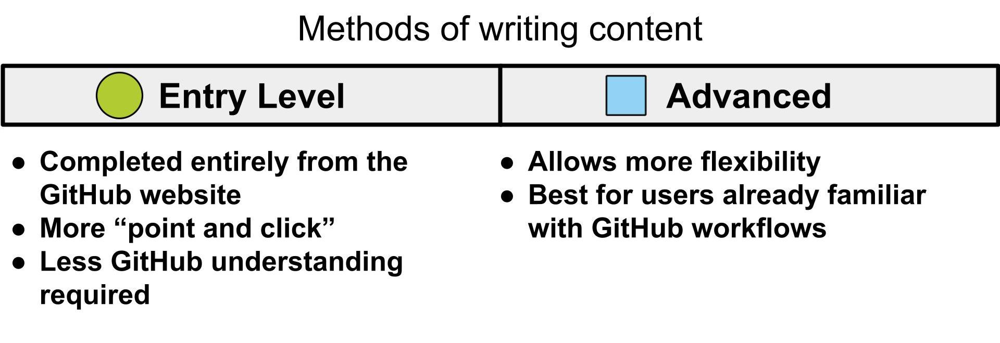
Get started with OTTR entry level – editing from the browser If you are not interested in delving into GitHub, you can use this version, which is entirely conducted through the GitHub web browser.
You can edit and add content directly in the GitHub website if you prefer not to learn Git and GitHub (though we highly recommend it, as knowing how to use Git/GitHub is a useful skill to integrate into your workflow – not just for OTTR).
1. Create a new branch
With GitHub in order to keep your OTTR course preserved content and code is managed through the use of branches. To explain branches we’ll mainly refer to two branches: your main branch:
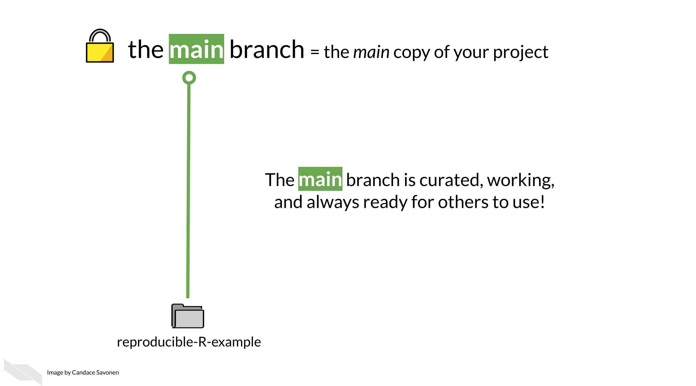
The main branch is what your content will be published from and it will be live to any learners looking at your course. You will want to keep this main branch as preserved and well curated as possible!
So when you are ready to add more content you will want to have an isolated copy of your files to work from that keeps your main branch safe as you work. You can name the branch you work from whatever you like – its recommended you name it something related to the changes you are working on
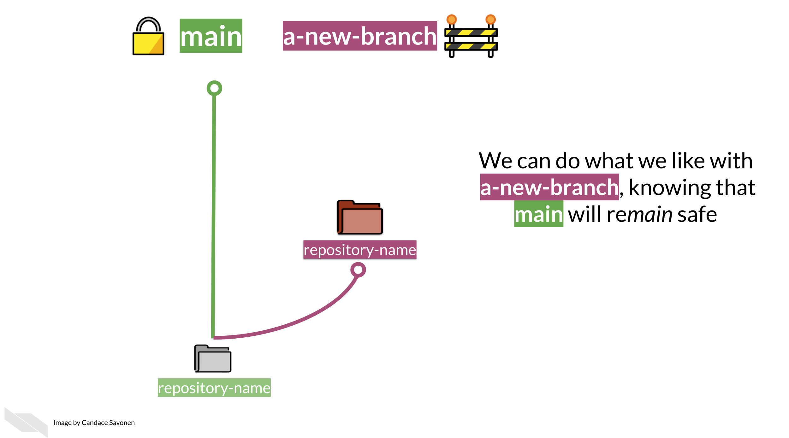
To create a new branch through the GitHub website, you will go to your main course repository page, click on the branch changing button that says main.
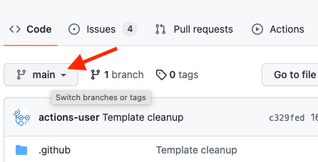
Type in a name for your new branch; something that relates to the changes you are making. For the purposes of this example, we’ll call this new branch, a-new-branch.
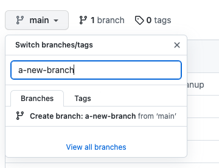
Then click Create branch: new-changes from main.
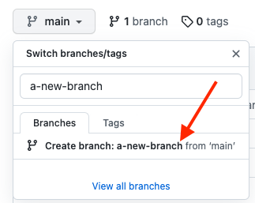
Congrats! You’ve made a new branch. GitHub will automatically show you your new branch’s files (which have been copied from the main).
You can tell that you are on the new branch as the left corner branch tab now says the name of our new branch (a-new-branch).
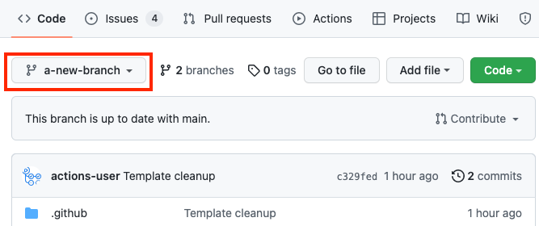
Now that we have a copy of all the files from the main branch, we can safely work on them in the a-new-branch branch.

Whenever you are making changes, you’ll want to check that you are on your new branch in order to add any new changes to your pull request, just look at the left upper corner to make sure!
Now let’s try making some changes.
2. Committing changes
In your OTTR repository, on your new branch, you can now add/edit/rename currently existing files while protecting your main branch. Adding changes to a branch is called making commits.
We will describe how to edit existing files below, however, GitHub has great information about how to create and remove files. Additionally GitHub is always making changes, so if our instructions seem out of date, definitely checkout GitHub’s current documentation:
After every edit you make, scroll down and make sure that you choose Commit directly to the new-changes branch.. This will add your changes to the pull request and thus allowing for these changes to be run through the OTTR checks.
Then click Commit changes. You will need to do this after every change to add them to your branch.
As an example, we will show a simple change to a content file. For a Quarto course, use a .qmd file such as setup.qmd; for an R Markdown course, use a .Rmd file such as 01-intro.Rmd. Scroll down to the file and click on the file name.
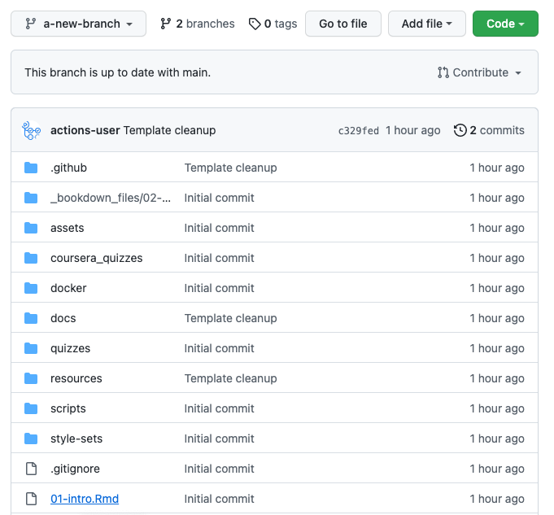
Now click on the edit button to make a change. Notice that it shows what branch we are working on.
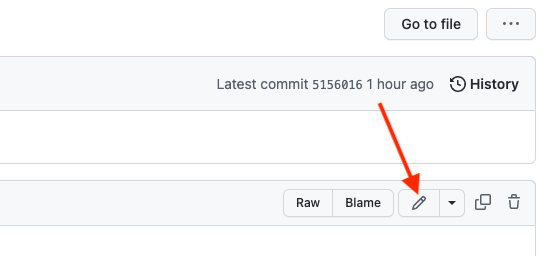
Make an edit, such as adding to the introduction like so.
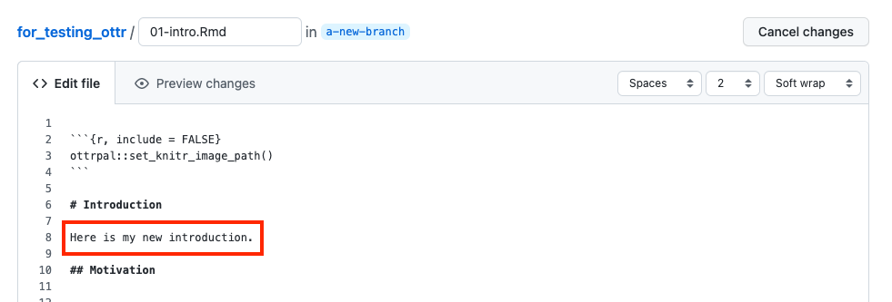
You can preview how it looks by pressing the Preview changes button. Red will indicate new deletions and green will indicate new additions.
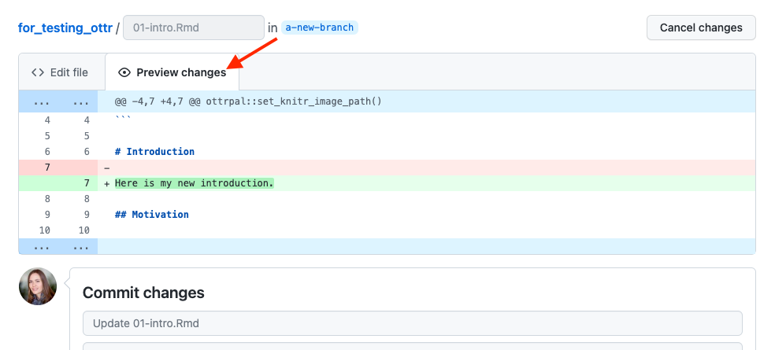
Then write a message about what changes you made and press the commit changes button.
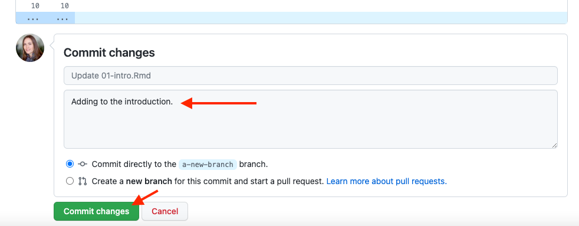
Now you are ready to open your pull request. Jump to section titled ‘Open a Pull Request’
Get started with OTTR Advanced – filing a PR from your computer: If you are already familiar with Git and GitHub or have an interest in starting to use them, we suggest this method. It will involve some additional learning, but acquiring skills in Git and GitHub will be highly beneficial not only for OTTR but also for version control in various other contexts.
If you have an interest in utilizing GitHub (or already possess knowledge in this area), we suggest engaging with GitHub and Git beyond the GitHub website for creating your pull requests.
If you are new to Git and GitHub, it is recommended you use a Git client to help you manage your branches more easily. Install GitKraken for a handy way to manage your course locally. These steps shown here will show you the GitKraken way of handling files.
If you are not new to GitHub, then we recommend skipping this section and jumping to the Setting Up Images section.
1. Cloning with Git
In the GitHub workflow (excluding the Entry-Level writing method), files exist online (remote) and on your computer (local).
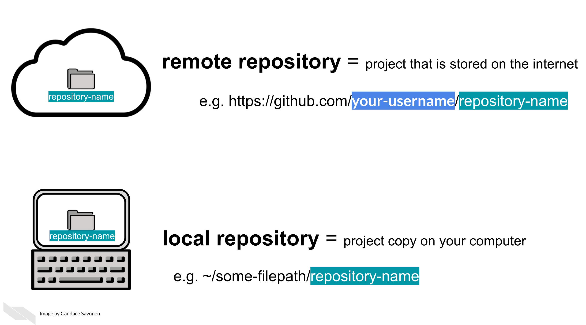
You will need to clone the course repository to your own computer. Having a local copy of the files you are working from makes it easier to work from. Cloning is just making a local copy on your computer of the remote version of the project on GitHub.
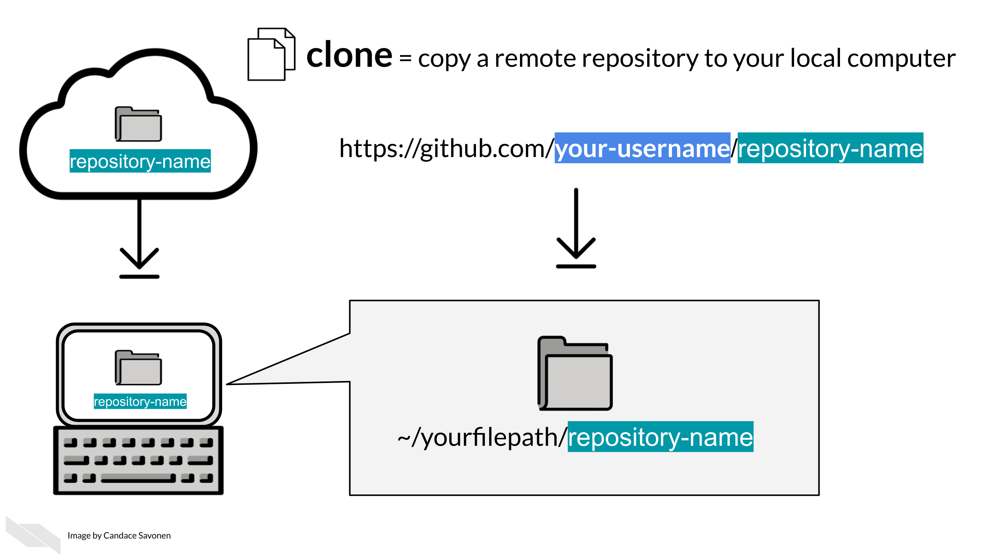
To get started, you will need to clone your course’s repository that you created, as you will be using it for the duration of writing your course.
To clone a GitHub repository, using GitKraken, first, click Clone a repo. Then, choose where you’d like the repository to be on your computer using the Browse button. You will need to Copy + Paste your new repository’s url to where it says URL.
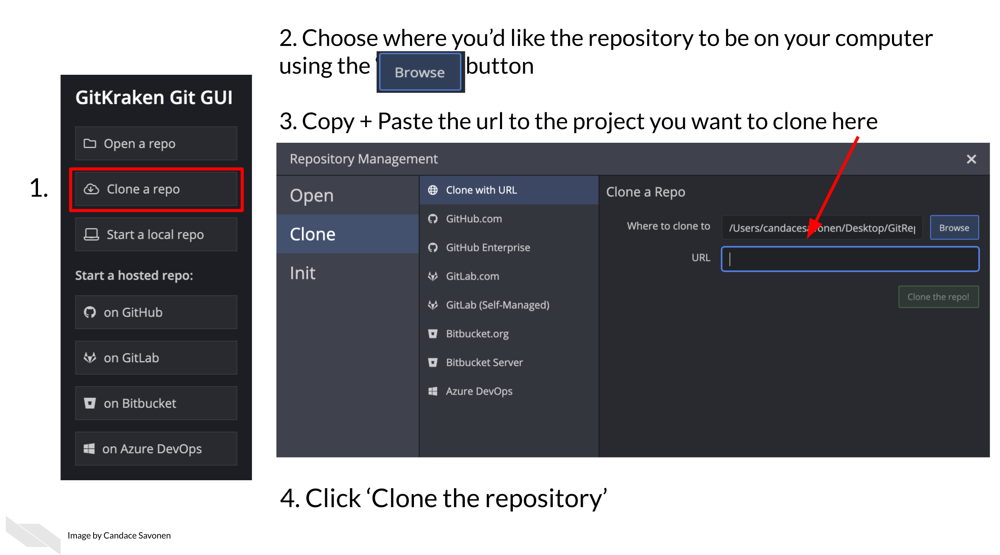
Navigate to your repository on GitHub to copy the URL. Copying and pasting is advisable because any little typo will inhibit cloning.
Now you are ready to click Clone the repository! It will ask you if you’d like to Open Now, click that.
2. Create a new branch
Handling branches is where you unleash the real benefit of GitHub, but it can be confusing at first.
In GitHub, preserving the content and code of your OTTR course is accomplished through the utilization of branches.
To explain branches we’ll mainly refer to two branches: your main branch:
The main branch is what your content will be published from and it will be live to any learners looking at your course. You will want to keep this main branch as preserved and well curated as possible!
So when you are ready to add more content you will want to have an isolated copy of your files to work from that keeps your main branch safe as you work. You can name the branch you work from whatever you like – its recommended you name it something related to the changes you are working on
The best way to get a grasp of what the branches represent is to create one and start using it.
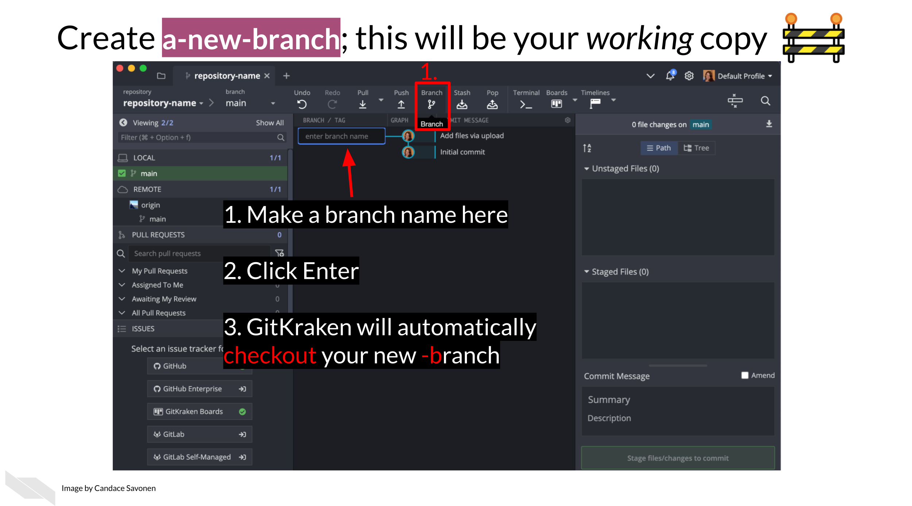
In GitKraken we can create a new branch; this will be your working copy. First, click the Branch button. Next, type in a branch name in the box that the cursor is blinking in. In our example, we are calling it a-new-branch. Now click Enter! Now you have a new branch!
Now we can add/edit/rename currently existing files in our new branch, knowing that the content and code in the main branch is safe.
3. Committing changes
Adding changes to a branch is called making commits. To modify any files in a branch we have to first 1) Make our changes as we normally would and then 2) Commit those changes.
To commit changes, begin by editing a file using your preferred text editor. You can simply double-click a file locally to open it. For this example, the specific change you make doesn’t matter much; it can be a small modification that you will easily notice later.
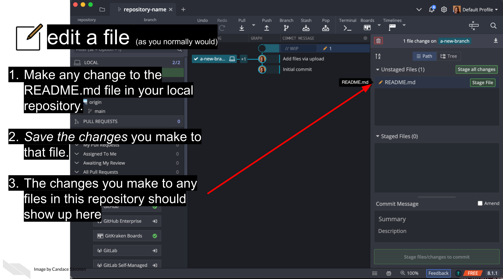
If you’ve made a change to any file in your repository, it will appear in GitKraken and you can click on it to see the differences.
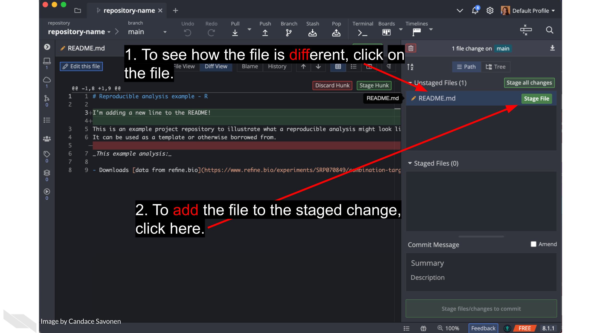
If we want to add these file changes to our current branch, we need to commit them.
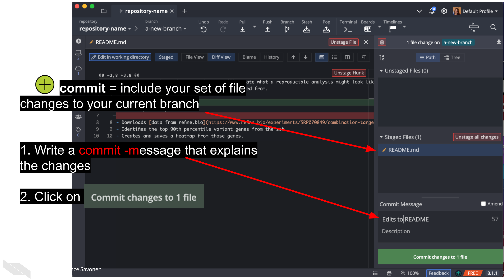
Great! Now the changes you’ve made have been added to your local branch.
4. Pushing changes
Note that when you’ve committed your changes locally (on your computer), those changes won’t be on the online version of your repository. To get them to the remote GitHub copy (the one on GitHub), we will need to push your commits.
Now that we have changes committed to our branch we are ready to also add them to the remote GitHub copy!
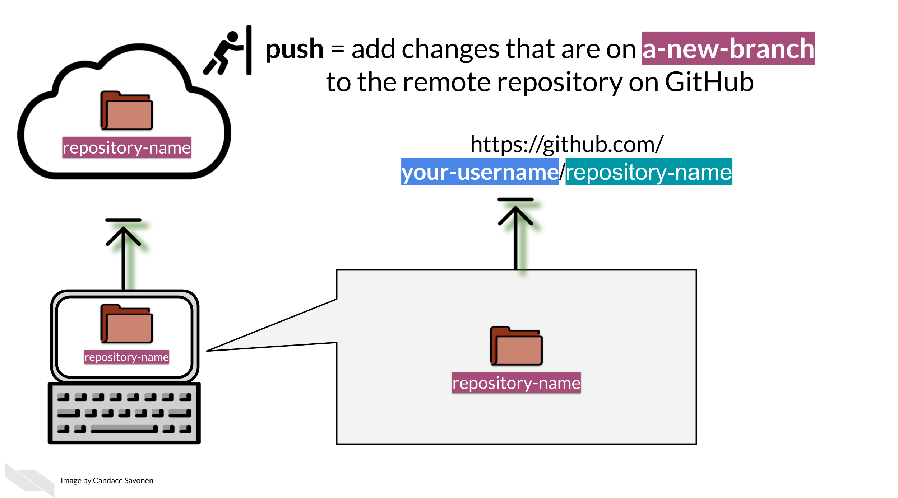
To push means to add changes that are on your new branch to the remote branch (internet version on GitHub). The word origin just refers to where your branch is stored on the internet. Choose your origin in the dropdown menu and click Submit.
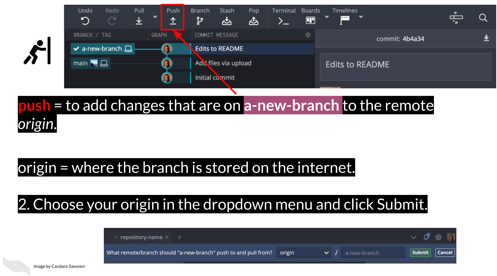
Open a pull request
After a variable number of commits, your branch, perhaps called a-new-branch or any other new branch you might have made, is a different version of the original code base that may have a nifty improvement to it. But our main goal is to add that nifty improvement to the main branch. To start this process of bringing in new changes to the main curated repository, we will create a pull request.
From GitHub:
Pull requests let you tell others about changes you’ve pushed to a GitHub repository. Once a pull request is sent, interested parties can review the set of changes, discuss potential modifications, and even push follow-up commits if necessary.
Pull requests are the meat of how code changes and improvements get reviewed and incorporated! A vast majority of the benefits of incorporating GitHub into your workflow centers around fully utilizing the power of pull requests!
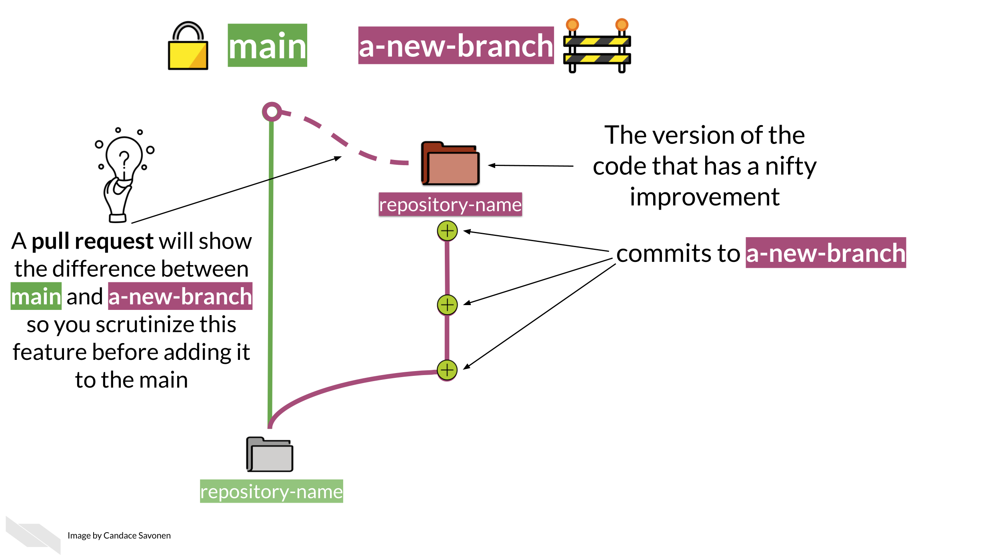
Now we can open up a pull request if we go to our GitHub repository on GitHub. You might need to migrate back to the main page for your repository and can do so by simply clicking on the blue name of your repository at the top. Then you will see something like this yellow banner message, where there is a button that says Compare & pull request.
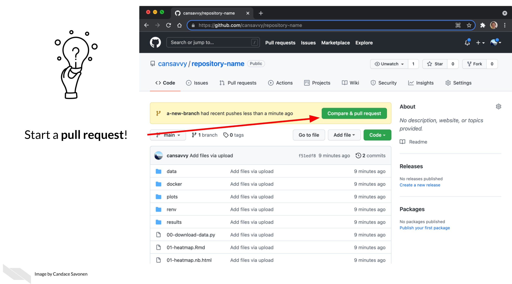
Click here if you don’t see the pull request message!!!
Note that sometimes if you have used the same branch multiple times you may need some extra steps to create a pull request. This will involve first clicking on the branch tab (which may have a different number).
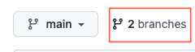
Then click on the New Pull Request button for the branch you want to work on. Be careful that is the branch you intend.
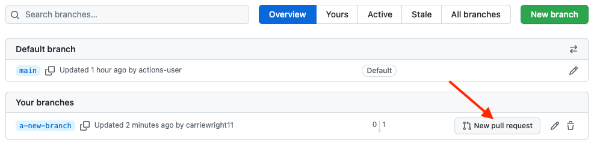
After you click on Compare & pull request you’ll be taken to a screen where you can add information about your changes. After you are done writing your description, click Create Pull Request! (If you don’t have your pull request description perfect don’t worry about it, you can always edit it later).
Congrats! You’ve just opened a pull request! For every set of changes you’ll make to your course, you will want to follow this similar set of steps.
In summary, here are the steps involved:
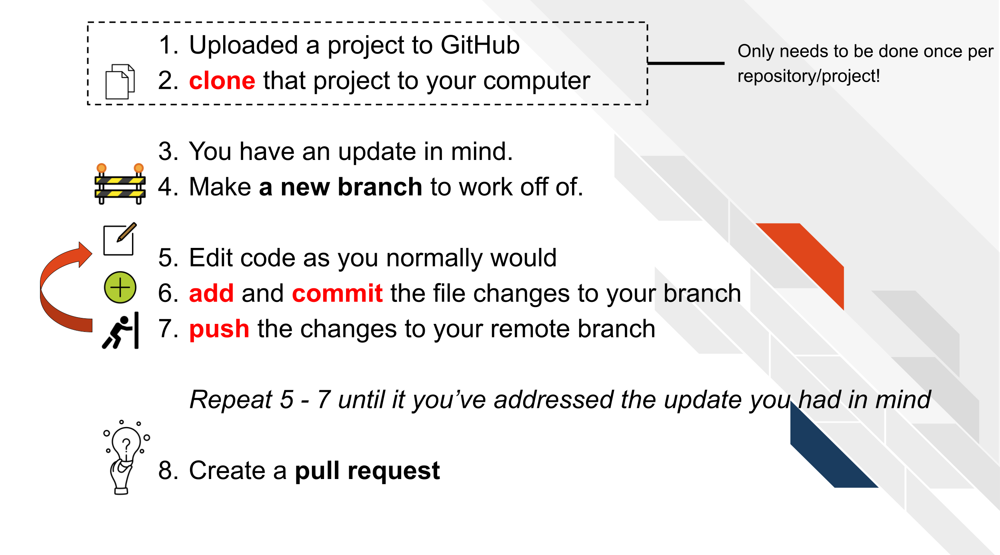
OTTR Checks on pull requests
Once your pull request is open, the OTTR GitHub Actions checks will begin. These checks will generate reports as comments on your pull request.

Read these comments to begin addressing the problems with more commits to your branch.
You can adjust what checks are run by editing the config_automation.yml file. This is further discussed in this section about the GitHub Actions.
If you need more information on failed GitHub actions you can scroll to the bottom of your pull request where the status of the checks are shown and click on Details for more information. If you are unsure what the error message means and have trouble addressing it, please file an issue on the OTTR_Template repository to get help.
For more on what to put in a pull request’s description, you can read this chapter.
For more on how to review a pull request, see this chapter.
Note
If you encounter situations where a spelling report or URL report doesn’t look as expected, you may just need to refresh the page or make another commit to your pull request.
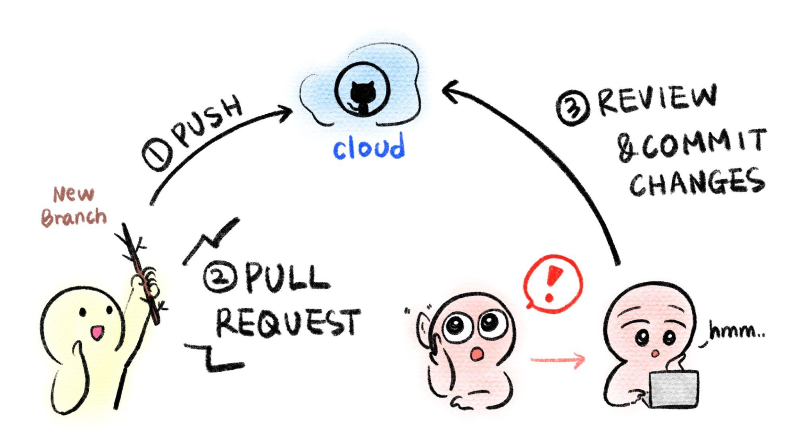
More resources for learning GitHub
Adding new chapters
Adding new chapters to your OTTR course requires a few specific steps depending on whether you are using Quarto or R Markdown.
More details
Step 1: Add a new chapter file
Create a new file on your working branch:
- Entry Level (browser): Follow GitHub’s instructions for adding a file.
- Advanced Level (local): Create the file in RStudio or a text editor, then add, commit, and push to your branch.
Name the file with a .qmd extension, e.g. 03-new_chapter_of_course.qmd.
Name the file with a .Rmd extension, e.g. 03-new_chapter_of_course.Rmd.
Step 2: Register the new chapter in your config file
Add the new filename to _quarto.yml under navbar::
Warning
Be cautious with indentation in _quarto.yml — YAML is sensitive to spacing and a misaligned line will break the build.
Add the new filename to _bookdown.yml under rmd_files::
rmd_files: ["index.Rmd",
"01-intro.Rmd",
"02-chapter_of_course.Rmd",
"03-new_chapter_of_course.Rmd", ## Only this is new!
"about.Rmd"]
Warning
Be cautious with quotation marks ("") and commas (,) on each line — a small typo here will break the build.
Step 3: Commit your config file changes
Commit the updated _quarto.yml (Quarto) or _bookdown.yml (R Markdown) to your current branch following the same commit steps you used for your chapter file.
Step 4: Check your pull request
Go to your repository and click the Pull Requests tab to review the automated check results for your new chapter.
Set up images
To ensure consistency in style and attributions for graphics and images, and to facilitate future updates, you have the option to store all your images in a central Google Slide document.
We encourage this strategy for several reasons:
- OTTR can interact with Google Slides to allow you to get all image updates of your current Google Slides whenever you re-render the content (no juggling different file versions of your images).
- Google Slides are easily shareable with your collaborators
- Google Slides is free
- Storing your images on Google slides allows them to be in one central location and may be helpful for you to re-use the media from your course in the future
- You can make videos of your slides that can be added to your course using Loqui. Loqui is an interactive web application designed for automated course creation. Loqui takes as input a Google Slides URL, extracts the speaker notes from the slides, and converts them to a voiceover of the video. Also, it converts the slides to images to serve as the visual component of the video.
Warning
Your Google Slide document must be set to Anyone with a link. See this article for more details. The renders will fail if this is not set!
For R Markdown/Bookdown courses, each .Rmd file with images needs to have the following chunk at the beginning so that images are stored properly for Leanpub conversion.
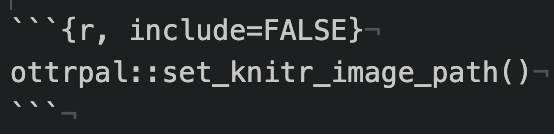
If you are unfamiliar with how R Markdown code chunks work, read this.
Next, import the appropriate theme (see this video for assistance).
Accessibility
Each slide and image added to the courses should be accessible so every member of your audience can use your content.
There are two things to check for each slide:
Adding media and embedded files in text
Adding images and graphics in text
All images should be included in your Google Slides with the captions we discussed above. To add images in the text in your .qmd or .Rmd files, use the ottrpal::include_slide() within an R code chunk.
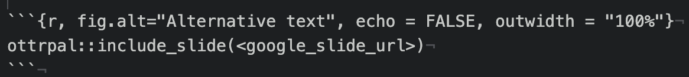
You can obtain the Google Slide URL by clicking on the slide with the image you want to add and copying the address from the browser search bar:

Additionally, include notes (similar to the fig.alt text) for each slide in the Google Slides presentation, describing the content and images of the slide. This will enable accessibility for individuals with visual impairments, as the notes can be converted into audio.
Please note the following formatting requirements for the fig.alt argument when using include_slide():
- line breaks are not allowed within the fig.alt text. (If there are no line breaks, the text should appear in blue within the code chunk.)
- If you need to put quotes around a phrase within the fig.alt text, stick with the same type (single or double) as used around the full fig.alt text.
The code chunk option echo=FALSE ensures that the R code is hidden from your course, while the code chunk option out.width = "100%" is used to size the image. We generally recommend going with larger images.
You must define fig.alt in the code chunk options/parameters to pass to knitr. You can adjust the size(fig.height, fig.width, out.width, out.height), alignment (fig.align), or caption (fig.cap) of the image you can use these arguments in the code chunk tag:
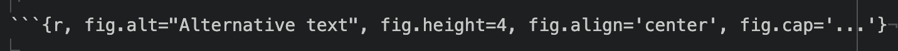
Google Slides must be public. Share settings must be set to “Anyone on the internet with this link can view”. Note that “Private” is the default setting when you make a new presentation.
See Chapter 2 of the template course for examples.
Adding videos in text
To add a YouTube video to your .qmd or .Rmd files, use the following instructions:
To get the appropriate YouTube URL do the following: 1) Click on the SHARE button on the lower right corner of the video on YouTube 2) Click on the Embed option on the far left 3) Copy just the part after "src =" and paste the url into the knitr::include_url() function.
Again, it is important to use the echo=FALSE option so that only the video is shown and not the code to generate it.
See Chapter 2 of the template course for examples.
Adding embedded files to text
Occasionally, it can be beneficial to embed a website or file directly on a webpage, especially when there is a crucial link that you want learners to access without solely relying on them clicking the link.
To include such a file or website do the following:
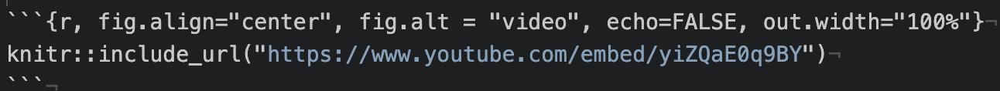
Again you will need to include echo = FALSE to ensure that the code to generate the preview of the website or file is not included in your course material.
If you want to include a file that is not hosted online, consider hosting it on GitHub using the method described for hosting your Bookdown version of the course. See the Set up GitHub pages section.
Then you would do the following, where the url is that of your hosted file:
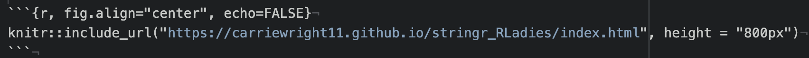
See Chapter 2 of the template course for examples.